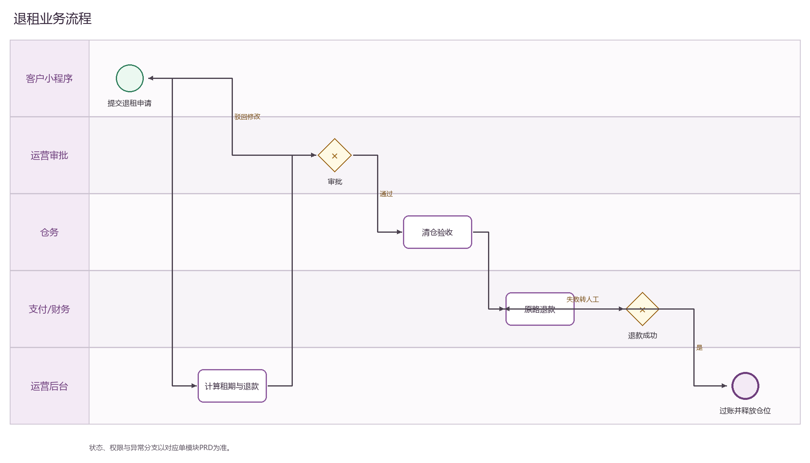
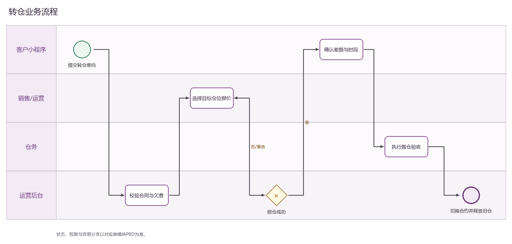
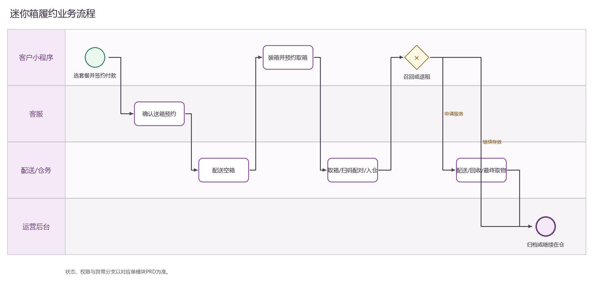
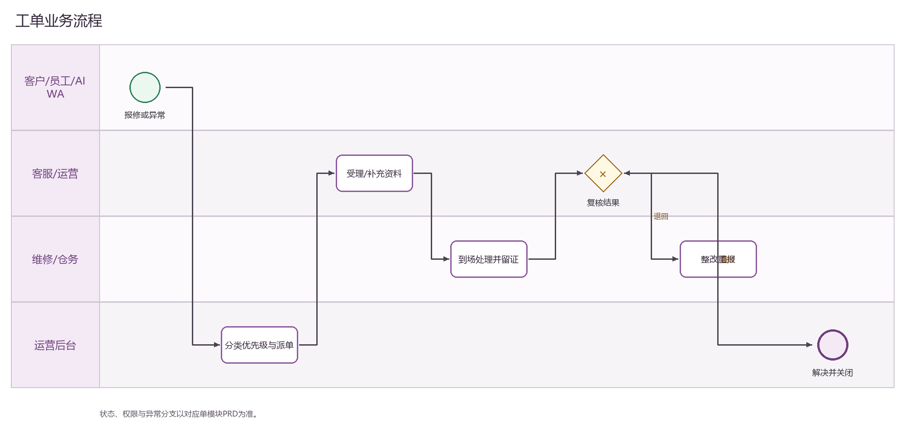

总纲与研发分工 PRD
下载原始 Word 文档总纲与研发分工 PRD
单模块需求规格 · 全局导航、公共规则、模块依赖
| 文档属性 | 内容 |
|---|---|
| 文档编号 | OS-OPS-PRD-00 |
| 产品基线 | AiwaBot产品原型 v3.2 / OneStorage 运营后台 V1.1 |
| 目标读者 | 产品、研发、测试、数据、运营、实施 |
| 版本日期 | V1.0 · 2026-08-24 |
| 模块目标：统一产品边界、跨端契约和研发分包。 |
|---|
1. 需求依据与版本口径
最终集成原型：C:/工作资料2026/产品IDE目录/aiwa/AiwaBot产品原型-v3.2.html（含嵌入式 OneStorage 运营后台）。
后台基线：迷你仓/OneStorage_迷你仓运营后台原型_V1.1.html 及配套业务脚本。
客户侧基线：OneStorage_小程序原型.html；内部执行端：OneStorage_内部工单小程序原型_V1.1.html。
一期范围口径：OneStorage_一期需求逐项功能差异清单.md；既有 OSS 主数据、编号与流程优先复用。
2. 范围与边界
| 范围内 | 范围外 |
|---|---|
| 总纲与研发分工的列表、详情、创建、编辑和状态动作 | 其他功能模块主数据的直接维护 |
| 关联对象校验、跳转、附件与时间线 | 绕过状态机或审批的强制改值 |
| 权限、数据范围、并发、审计和异常处理 | 以前端缓存作为最终金额、权限或状态依据 |
| 涉及本模块的小程序/内部端交互 | 未授权第三方自动执行 |
3. 页面与导航
本模块覆盖：全局导航、公共规则、模块依赖。
列表默认支持关键词、状态、负责人/门店、时间筛选；筛选条件可重置并在返回列表时保留。
详情以主对象为中心展示关联对象、允许动作、附件/凭证和审计时间线；写动作必须显式反馈成功或失败。
4. 角色与权限
| 角色 | 职责与数据范围 |
|---|---|
| 运营管理员 | 跨门店配置、受理、复核与异常处理 |
| 区域/门店负责人 | 仅授权门店的数据和动作 |
| 业务执行人员 | 按分派和当前允许操作执行 |
| 客户/AIWA | 仅本人数据或受控工具权限 |
5. BPMN业务流程

图 1 销售转化 BPMN泳道图；可编辑源文件见BPMN流程图目录

图 2 签约付款 BPMN泳道图；可编辑源文件见BPMN流程图目录

图 3 续租 BPMN泳道图；可编辑源文件见BPMN流程图目录

图 4 退租 BPMN泳道图；可编辑源文件见BPMN流程图目录

图 5 转仓 BPMN泳道图；可编辑源文件见BPMN流程图目录

图 6 迷你箱履约 BPMN泳道图；可编辑源文件见BPMN流程图目录

图 7 工单 BPMN泳道图；可编辑源文件见BPMN流程图目录

图 8 营销核销 BPMN泳道图；可编辑源文件见BPMN流程图目录
6. 功能需求
| 需求ID | 功能 | 详细规则 | 优先级 |
|---|---|---|---|
| M00-01 | 规则1 | 除总纲外，一份文档只对应一个独立研发和验收模块。 | P0 |
| M00-02 | 规则2 | 复用客户号、L、OP、SO、合同号、保单号、箱号和WO号。 | P0 |
| M00-03 | 规则3 | 状态、金额、权限以后台主域为唯一事实源。 | P0 |
| M00-04 | 规则4 | 所有写入使用客户端请求编号、预期数据版本和Outbox。 | P0 |
| M00-90 | 列表与详情 | 支持关键词、状态、门店/负责人和时间筛选；详情展示关联对象、当前允许操作和审计时间线。 | P0 |
| M00-91 | 导入导出 | 导出继承筛选、脱敏和数据范围；正式对象导入逐行校验并返回错误。 | P1 |
7. 状态机与业务不变量
| 对象 | 状态/流转 | 不变量 |
|---|---|---|
| 总纲与研发分工 | 草稿/待处理→处理中→完成/取消/异常 | 实际状态以本模块规则和当前允许操作为准 |
| 同步任务 | 待发送→成功/失败→重试/人工处理 | 同步失败不伪装主业务成功 |
8. 与迷你仓小程序/内部小程序交互规则
客户小程序仅查看本人客户号关联数据；员工端仅查看本人/团队授权任务。
跨端提交先落后台业务记录并返回业务编号；重复客户端请求编号返回原结果。
后台状态变化以事件同步提醒；深链打开后回源校验身份、权限和最新状态。
AIWA只使用受控接口；付款、退款、审批和权限变更禁止自动完成或必须人工确认。
9. 通用字段、接口与事件约束
| 类别 | 要求 |
|---|---|
| 主键/版本 | 所有对象返回id、业务单号、数据版本、创建时间、更新时间；业务编号不可用展示文案替代。 |
| 写请求 | 携带客户端请求编号与预期数据版本；服务端校验身份、数据范围、状态与必填。 |
| 允许动作 | 返回当前允许操作；客户端只作展示控制，后端仍逐动作鉴权。 |
| 事件 | 成功提交后发布领域事件；通知、搜索、统计最终一致，详情读主域。 |
| 附件 | 短期签名上传；校验类型/大小/哈希/病毒；正式版本不可覆盖。 |
| 时间金额 | 服务器时间、香港时间业务日；金额用最小货币单位并显式币种。 |
10. 异常、并发与安全
400返回字段级校验并保留输入；401/403重新登录或提示无权限；404避免泄露对象是否存在。
409 数据版本冲突要求刷新详情和当前允许操作，禁止最后写入覆盖。
第三方超时/失败进入重试或人工队列；主业务未确认成功前不得向客户展示完成。
敏感字段最小化、脱敏、加密存储；原文查看、下载、导出与审批均记录审计。
列表、关联选择器、统计、搜索、导出使用同一数据范围策略。
11. 验收标准
所有P0规则均有接口、状态机和权限测试。
重复提交不产生重复记录或重复副作用。
后台与小程序/内部端的编号、状态、金额和时间一致。
越权、版本冲突、空数据和第三方失败均有明确处理。
12. 研发分工建议
| 工作包 | 负责内容 |
|---|---|
| 后端 | 领域模型、状态机、权限、接口和事件 |
| 运营后台 | 列表、详情、表单、动作和异常态 |
| 跨端 | 小程序/内部端展示、申请、通知和深链 |
| 测试 | 规则、并发、权限、异常和回归验收 |
13. 待业务确认与实施依赖
状态文案、SLA/提醒阈值、审批角色、通知渠道和保留期需在开发前冻结为配置表。
支付、电子签约、物流、WhatsApp/媒体、电话线路等仅在账号、API、模板、合规授权齐备后启用。
现有OSS字段、枚举、编号生成和批核规则需通过样本数据再次确认；差异进入映射表，不在前端硬适配。
所有P0需求进入接口契约、状态机自动化测试与UAT；P1按一期排期和依赖评审。